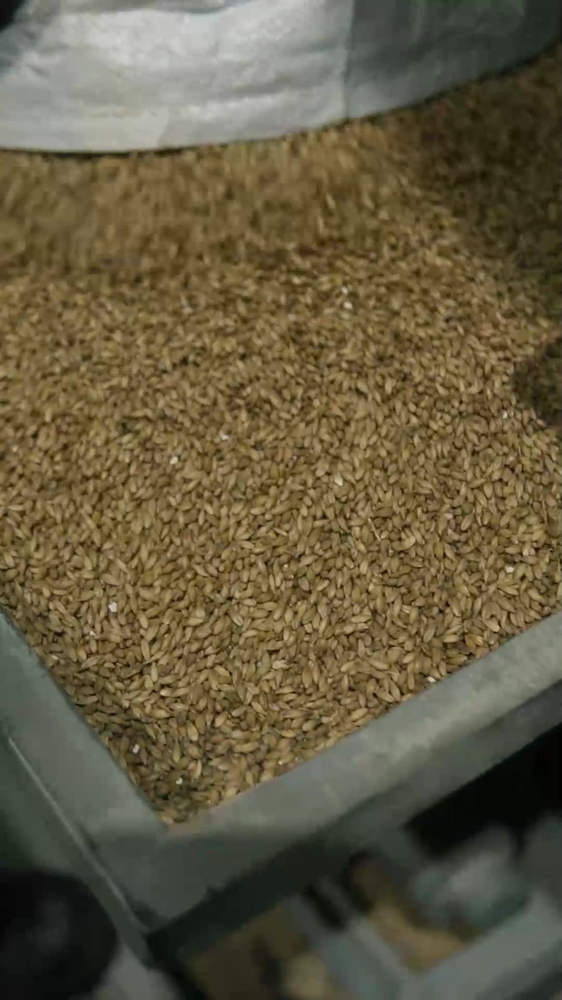
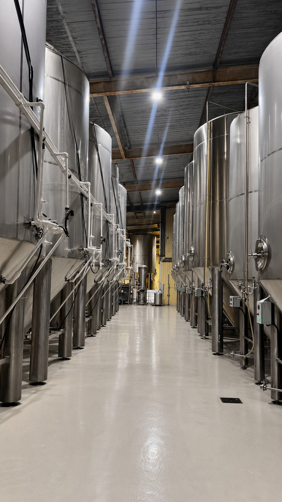
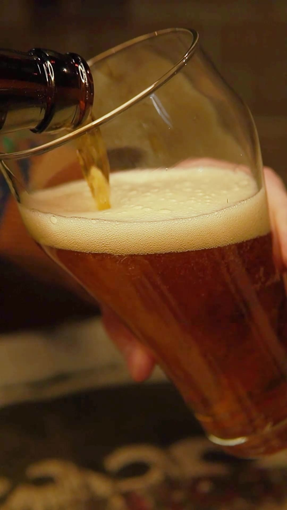

Полный цикл варки на одной площадке: без аутсорса и контрактного производства. Каждый этап — под собственным контролем.

Солод, хмель и вода — основа вкуса. Мы не экономим на сырье и берём его у проверенных поставщиков, без посредников там, где это возможно.
Используем солод от проверенных производителей — основа чистого вкуса будущего пива.
Подбираем сорта хмеля под каждый рецепт — от мягкой горечи до выраженного хмелевого характера.
Собственный источник воды — стабильный состав, важный для повторяемости вкуса от партии к партии.

Затирание, кипячение с хмелем, охлаждение, брожение и созревание — классическая технология без сокращения сроков ради скорости.
Каждый сорт варится по фиксированному рецепту с контролем температуры на всех стадиях.
Не торопим брожение — пиво получает то время, которое нужно стилю.

Перед розливом каждая партия проходит лабораторную проверку. Сроки хранения, которые мы заявляем, подтверждены экспертизой.
Проверяем плотность, чистоту брожения и микробиологическую безопасность каждой варки.
Разливаем в кеги, бутылки или поставляем оборудование для танкового розлива в точке продажи.
«Технология не меняется в зависимости от объёма заказа — большая партия варится так же тщательно, как пробная».— производственная команда Хмельной Мануфактуры
Покажем цеха, расскажем о рецептах и угостим свежим пивом прямо с линии.
Записаться